安装Centos7
镜像
推荐Centos7 Minimal镜像 http://mirrors.aliyun.com/centos/7/isos/x86_64/CentOS-7-x86_64-Minimal-1810.iso
安装
下载下来之后用新建虚拟机，开始安装
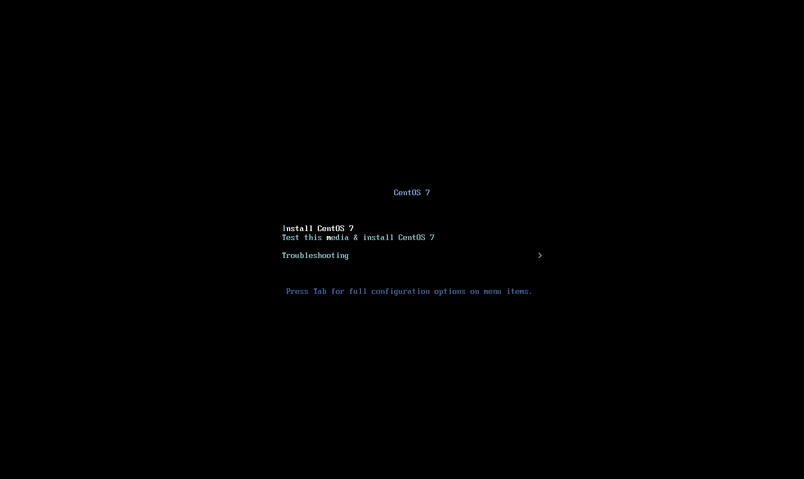
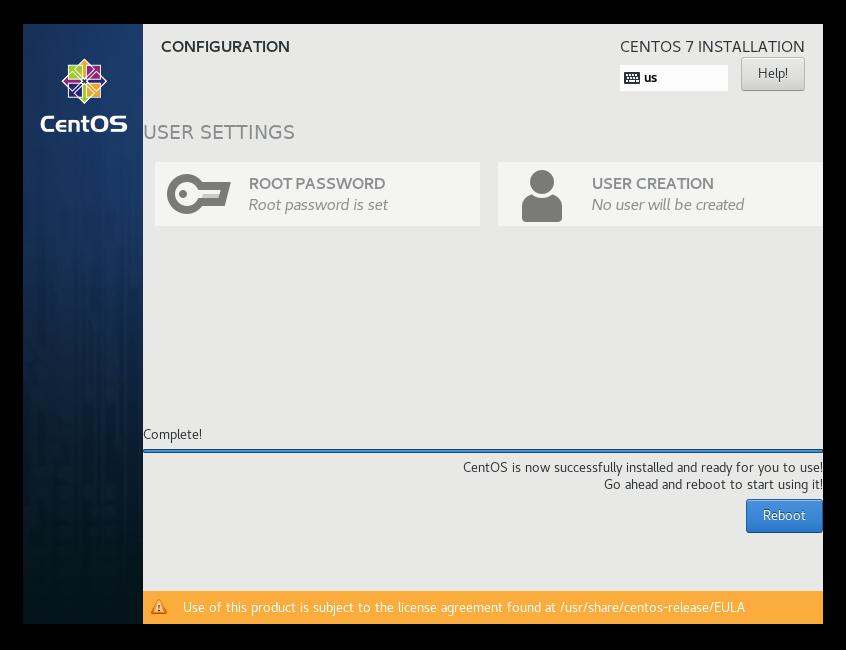
查看ip
因为没有ifconfig 所以我们 输入 ip addr show 来查看当前ip 地址
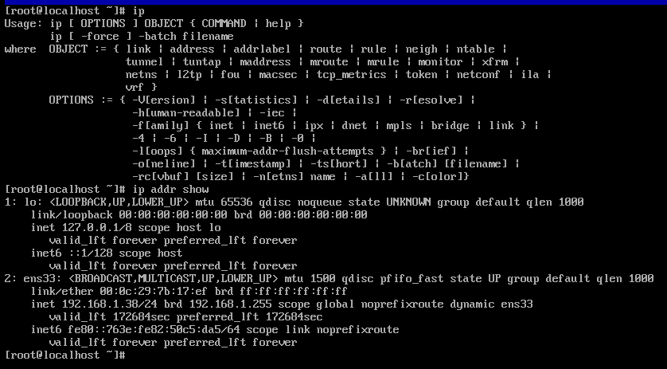
检测连接
ping下检测下是否联通
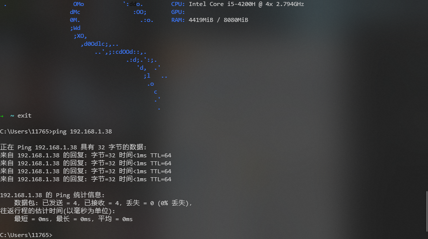
连接
用Xshell 或者什么软件连接
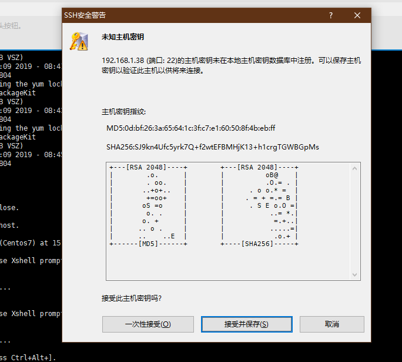
修改yum 源
因为我们在国内，所以访问国外的网站会很慢
先 yum update 一下，安装wget
1 | yum update |
开始换成国内yum源
1 | cd /etc/yum.repo.d |
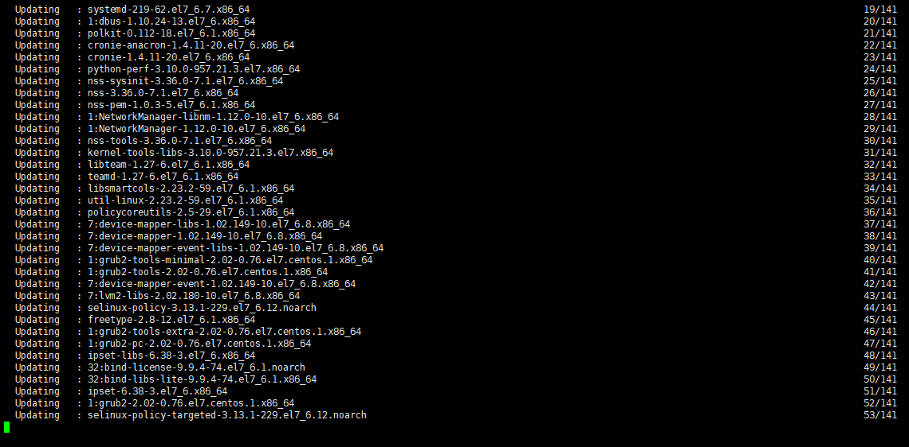
安装jdk
yum search java|grep jdk
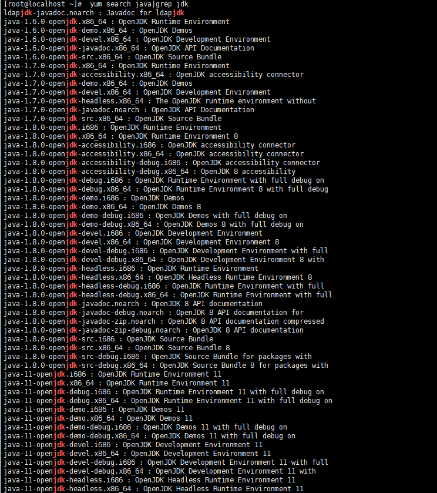
我安装了 java-1.8.0-openjdk
yum install java-1.8.0-openjdk
java -version 来测试下有没有安装成功
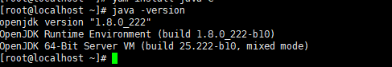
如图就表示安装成功了
安装Tomcat
下载
Centos7 源里面的Tomcat最新版本是7，我们可以从官网下载最新的9
https://tomcat.apache.org/download-90.cgi
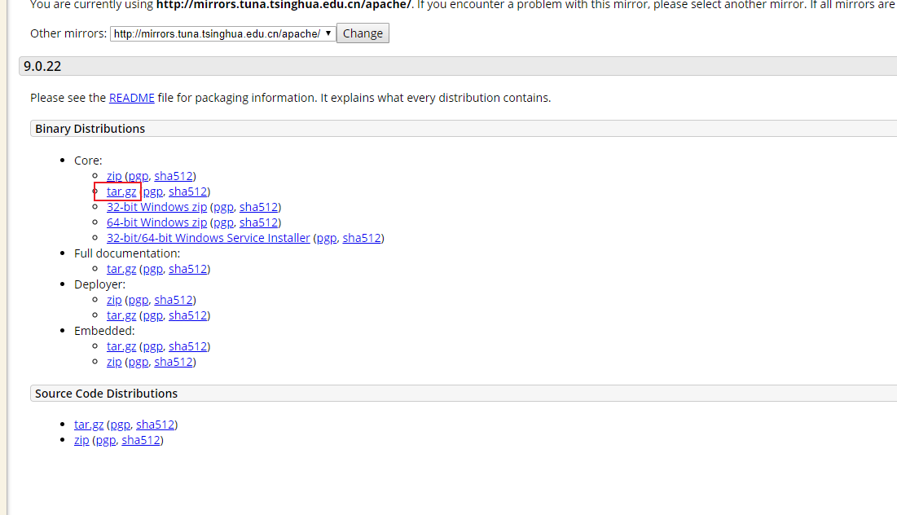
可能速度比较慢
链接：https://share.weiyun.com/5a7Kque 密码：666666
sha512
9d3d93f8e03b5dc74e8d2ebc3f9daeb481485a391fb10289e23848063c23f52e8cf8566ebc7ff4f62c9b9f71591fad368a2bab487d31377c85a2607be3e029ff *apache-tomcat-9.0.22.tar.gz
1 | wget http://mirrors.tuna.tsinghua.edu.cn/apache/tomcat/tomcat-9/v9.0.22/bin/apache-tomcat-9.0.22.tar.gz |
先建个文件夹
1 | mkdir /opt/tomcat |
压缩文件有11M大小
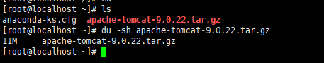
安装
把Tomcat 解压到 /opt/tomcat
tar -zxvf apache-tomcat-9.0.22.tar.gz -C /opt/tomcat/
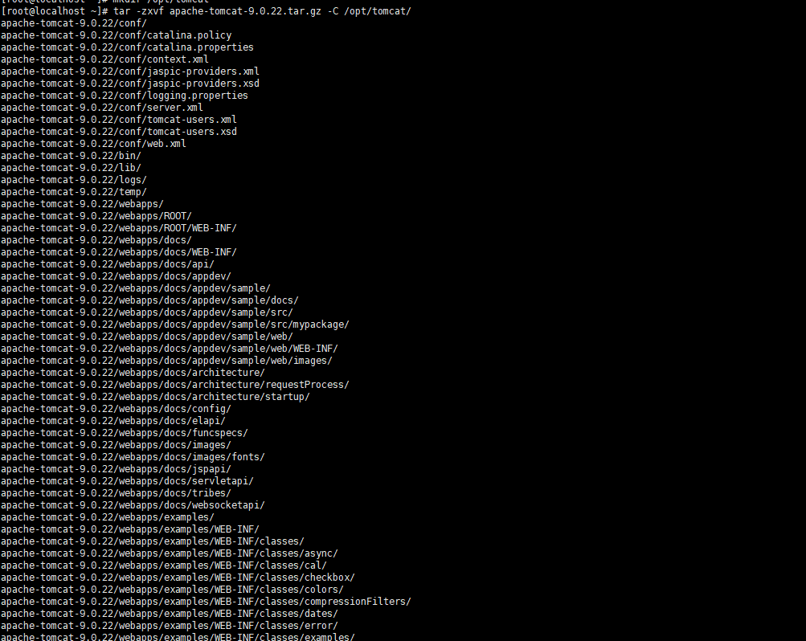
创建链接文件
ln -sv /opt/tomcat/apache-tomcat-9.0.22 /usr/local/tomcat9
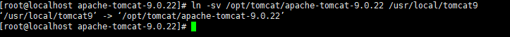
配置tomcat9启动环境
1 | vi /etc/profile.d/tomcat9.sh |
再执行
source /etc/profile.d/tomcat9.sh
没有提示就是没有报错
官方建议在tomcat安装目录的bin目录下建一个setenv.sh,将JAVA_HOME,JRE_HOME等环境变量信息指定。示例如下：
1 | CATALINA_HOME=/usr/local/tomcat9 |
切换到 bin 目录 ./startup.sh
1 | [root@localhost bin]# ss -tnpl |grep 8080 |
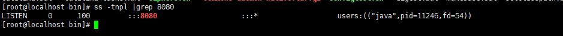
访问 8080端口看到如下界面，就代表成功了
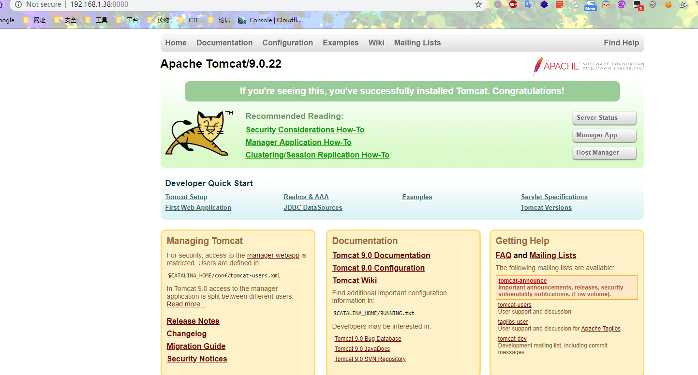
如果可以看到端口，但是不能访问
1 | 查看防火墙状态 |
注册为服务
1 | vi /usr/lib/systemd/system/tomcat9.service |
1 |
|
配置访问tomcat9管理界面
修改conf/tomcat-users.xml
添加如下内容
1 |
1 | 修改webapps/manager/META-INF目录下的context.xml,在allow行的末尾加上|\d+.\d+.\d+.\d+表示允许所有主机访问。 |
1 |
|
重启tomcat9生效